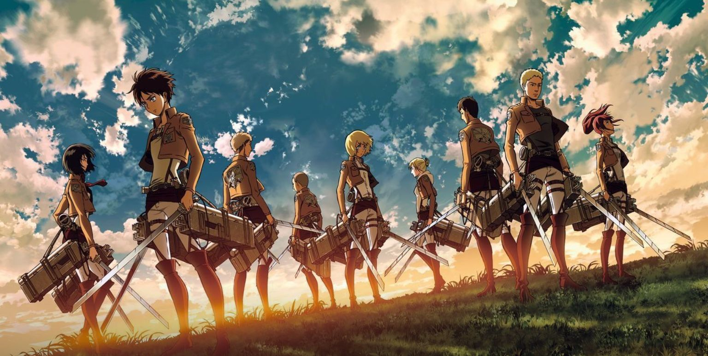

進撃の巨人
あらすじ
人類は突如出現した「巨人」により滅亡の淵に立たされた。生き残った人類は「ウォール・マリア」、
「ウォール・ローゼ」、「ウォール・シーナ」という巨大な三重の城壁（甕城）の内側に生活圏を確保する
ことで100年の間、辛うじてその命脈を保っていた。エレンが10歳となった845年。突如現れた、壁を超える
巨体を持つ「超大型巨人」によってシガンシナ区の扉が破られ、巨人の群れが壁内に侵入する。全身が堅い
外皮に覆われた「鎧の巨人」によって遮断不能となったウォール・マリアは放棄され、人類の活動領域は
ウォール・ローゼまで後退することになった。目前で母カルラを巨人の一体に捕食され、故郷、夢、全てを
奪われたエレンは巨人の駆逐を決意し、ミカサ、アルミンと共に第104期訓練兵団に入団する。
